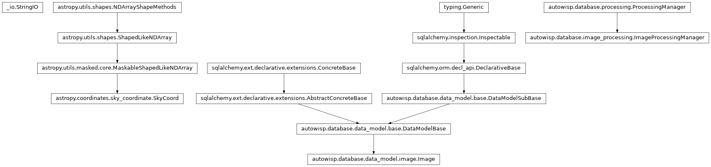

autowisp.browser_interface.processing.select_photref_views module
Class Inheritance Diagram

Implement the view for selecting single photometric reference.
- autowisp.browser_interface.processing.select_photref_views._create_merit_histograms(merit_data, merit, image_index, max_photref_separation=0.2)[source]
Create SVG histograms of the candidates’ merit and every diagnostic.
After the pointing plots, which show what the image shown would leave unbound as the reference, the merit comes first. Each histogram marks the image shown, and the quantile in a diagnostic’s title is among the candidates.
- autowisp.browser_interface.processing.select_photref_views._create_pointing_plots(merit_data, image_index, max_photref_separation=0.2, zoom_threshold=3, **plot_cfg)[source]
Create SVG plots for pointing: RA vs Dec scatter and separation histogram.
Images within max_photref_separation * diagonal_fov of the current image are drawn with in_range_cfg, those outside with out_of_range_cfg, and the current image itself with this_img_cfg. RA axis is inverted per astronomical convention. The separation histogram includes a vertical line at the threshold.
If the maximum separation among all images exceeds zoom_threshold * threshold_deg, an additional zoomed scatter plot is appended that restricts the view to images within that radius so the in-range clustering remains visible despite the wider spread. Images in the zoomed plot are still coloured by the original threshold_deg.
- Returns:
List of SVG strings, or empty list if the required diagnostics (ra_center, dec_center, diagonal_fov) are absent.
- autowisp.browser_interface.processing.select_photref_views._describe_held_back(exclusions, num_held_back)[source]
Return what to say about the images not offered as the reference.
- autowisp.browser_interface.processing.select_photref_views._get_merit(request, db_session)[source]
Return the library expressions to rank by, and the one to rank by now.
The one chosen on the page if it can still rank candidates, otherwise
photref_merit; None if that cannot either, e.g. deleted.
- autowisp.browser_interface.processing.select_photref_views._get_merit_data(request, batch)[source]
Return the candidates for a group’s reference, best first.
Evaluated on every request rather than kept, so that a change to the merit expression or to the exclusion rule shows on the next one. Only the images offered as the reference are ranked: not those the magnitude fitting exclusion rule leaves out.
- Returns:
- pandas.DataFrame: A row per candidate, best first, indexed by
its position in batch, which is what a choice is mapped back through. A column per diagnostic, and one for the merit under its name.
str or None: The name of the merit ranked by, None if none.
str: What to say about the images not offered.
- Return type:
- autowisp.browser_interface.processing.select_photref_views._get_missing_photref(request)[source]
Add all frame sets missing photometric reference to the session.
- autowisp.browser_interface.processing.select_photref_views.create_svg(fig)[source]
Save fig to an SVG string, close the figure, and return the string.
- autowisp.browser_interface.processing.select_photref_views.record_photref_selection(request)[source]
Record the single photometric reference whose DR file is
?photref=.The frame is named by its DR file rather than by a position, among the ranked candidates or in its group, since both change as references are recorded. Only the entries just bound stop needing a reference, so the groups are updated rather than derived again, which would re-read every raw header.